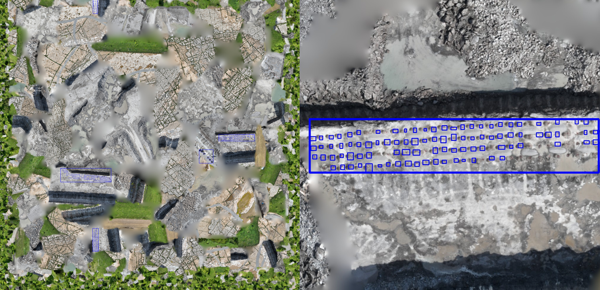

Tianyu Hao (郝天宇)
M.S. Student in Artificial Intelligence, Guangzhou University, Academician Binxing Fang's Experimental Class
Advisor: Prof. Keke Tang (唐可可)
Find More about Tianyu: Google Scholar
Biography
During high school, I was enrolled in a joint program between the NO.1 Middle School affiliated to Central China Normal University (华中师范大学第一附属中学) and the Teenagers Aviation School of the Air Force (空军青少年航空学校). There, I received systematic training in flight technology and successfully completed five sorties on the CJ-6 trainer aircraft, ranking at the top of my regiment in flight performance. This early experience with avionics, control systems, and high-reliability engineering sparked my long-term interest in how complex systems sense, decide, and act in the real world.
For my undergraduate studies, I attended Lanzhou University of Finance and Economics. Instead of continuing on a military track, I chose to pursue research and engineering. Under the guidance of Prof. Jiangping He, I worked on projects at the intersection of data analysis and intelligent systems, earning two national-level awards and publishing two minor papers.
I am currently pursuing my Master’s degree under the supervision of Prof. Keke Tang. My recent research focuses on artificial intelligence and its applications, and has so far led to one publication at AAAI and one at IJCAI.
Referred Research Publications
-

Less Is More: Sparse and Cooperative Perturbation for Point Cloud Attacks
AAAI Conference on Artificial Intelligence (AAAI), 2026 (Oral)
[PDF]
-

AdvGrasp: Adversarial Attacks on Robotic Grasping from a Physical Perspective
International Joint Conference on Artificial Intelligence (IJCAI), 2025
[PDF]
-

Adaptive Contextual Embedding for Robust Far-View Borehole Detection
3rd Workshop on Generalizing from Limited Resources in the Open World at IJCAI, Montreal, Canada.
[PDF]
-

QuarrySet: An RGB Dataset and Benchmark for Data-centric Quarry Analysis
4th DataCV Workshop at ICCV, Honolulu, USA.
[PDF]
Research
My research interests fall into the areas of robotics, computer vision and computer graphics, including:
AI Security
- Adversarial Examples
- Robotic Security
Robotics
- Robotic Vision
- Security in Robotics
- Computational Robotics
Computer Vision
- 3D Shape Description and Matching
- 3D Object Registration, Reconstruction, and Recognition
- Image Classification
Computer Graphics
- Geometry Processing
- Computational Fabrication